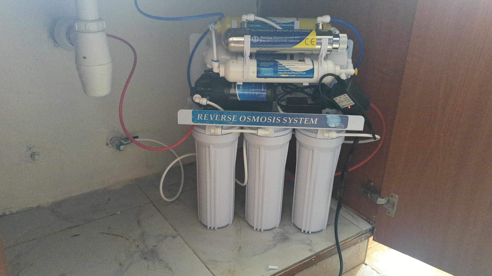
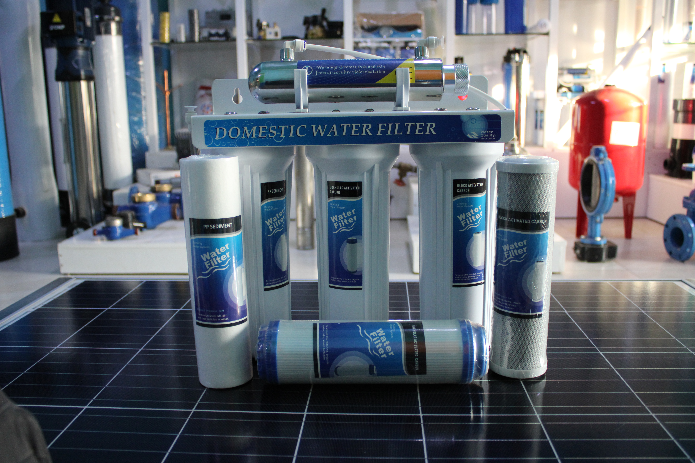
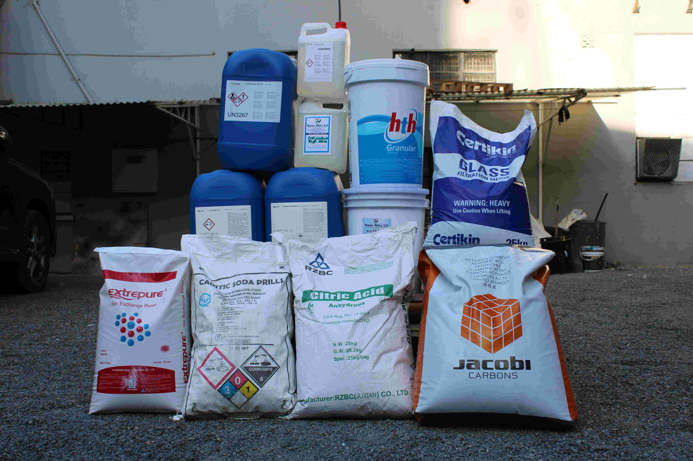
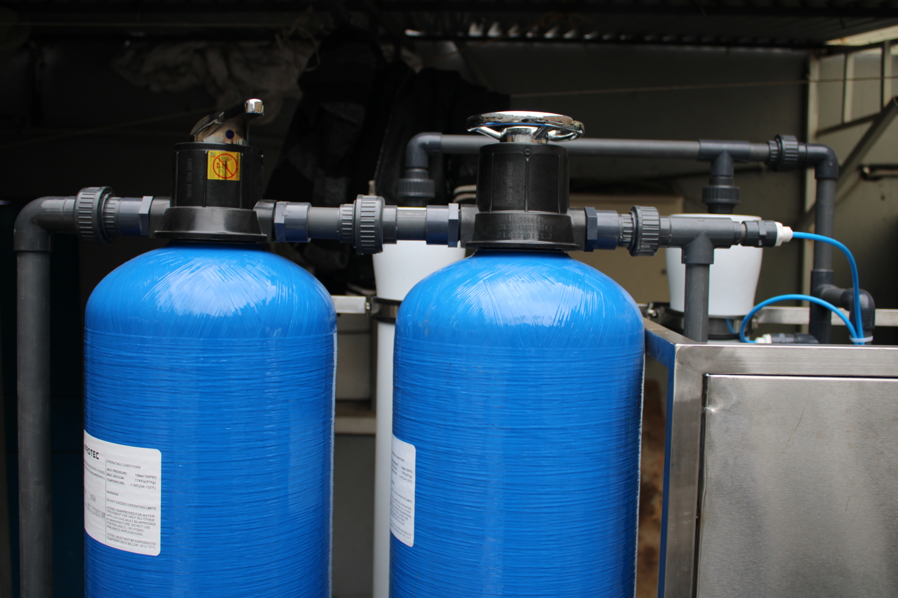
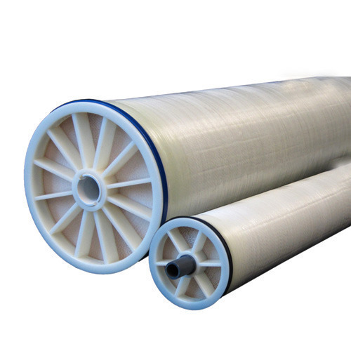
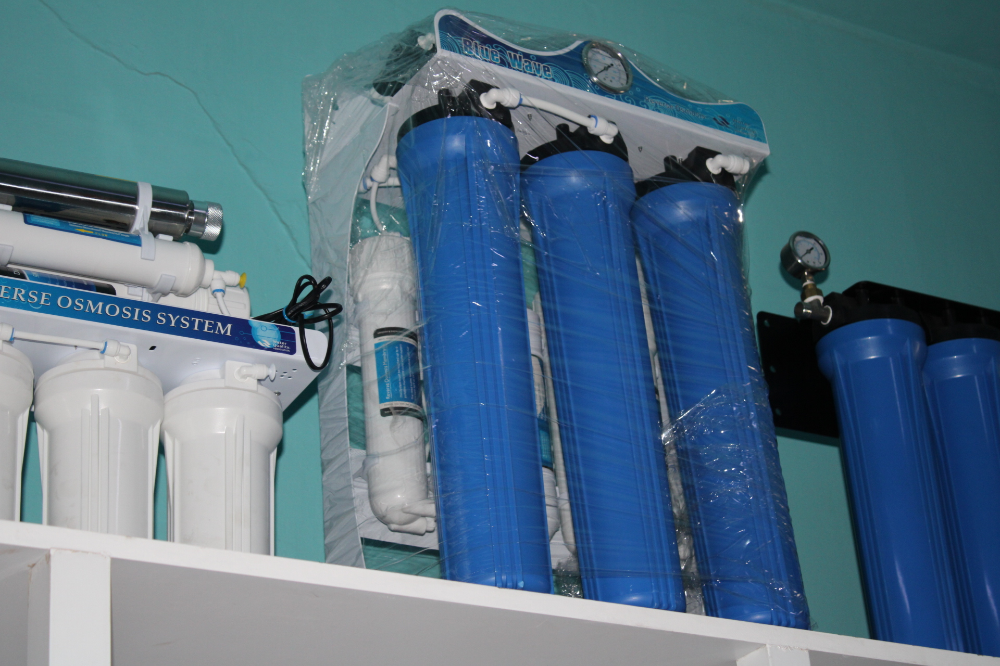
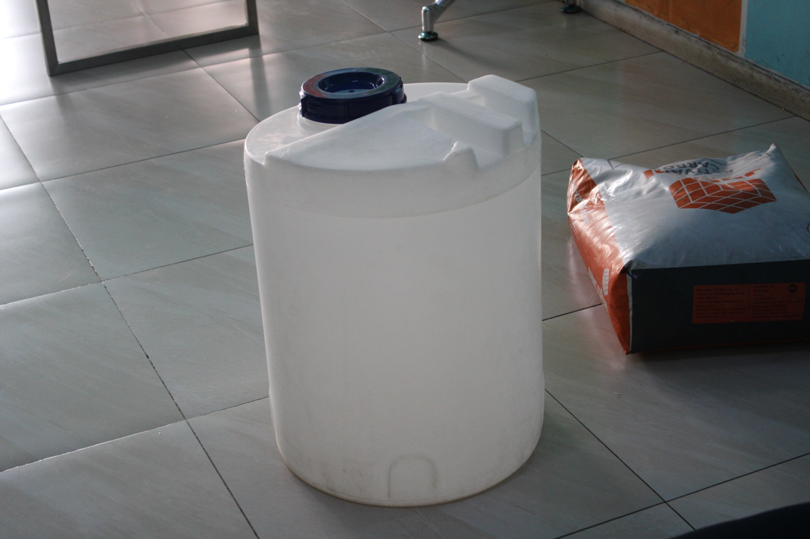
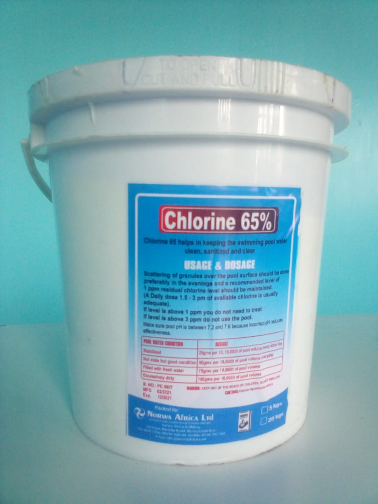

Chemicals/Media Water Treatment Solution
Purification Plants & Systems
Our comprehensive range of plants and systems are engineered for reliability and efficiency, tackling everything from dissolved solids to biological contaminants for commercial and industrial applications.
Reverse Osmosis (RO) Systems

Reverse osmosis provides the finest level of filtration, acting as a barrier to salts, inorganic molecules, and organics. It is a highly effective process for removing contaminants like nitrates, metal ions, pesticides, and endotoxins. Our systems use advanced, spiral-wound membranes for high efficiency and easy maintenance, available for both 4” and 8” applications.
Water Softening Plants
Our water softeners use an ion exchange process to remove calcium and magnesium, preventing scale buildup that can damage pipes, boilers, and cooling towers. These systems are crucial for any facility dependent on high-performance equipment and are designed for both commercial and industrial use.
Ultrafiltration (UF) & UV Systems

Ultrafiltration (UF) is a pressure-driven membrane process excellent for separating particulate matter, making it ideal for desalination pretreatment and wastewater reclamation. UV Purification uses germicidal ultraviolet light to disrupt the DNA of microorganisms like bacteria and viruses, providing chemical-free disinfection without altering the taste or odor of water.
Specialty Chemicals & Filtration Media
We provide a wide range of high-performance chemicals and media to optimize your water treatment processes, from pre-treatment to disinfection and maintenance.
Reverse Osmosis Chemicals (Genesys)
A complete line of specialty chemicals to maintain and restore membrane performance.
- Antiscalants (Genesys LF, SI, RC): Broad-spectrum and silica-specific antiscalants to prevent inorganic scale and reduce cleaning frequency.
- Membrane Cleaners (Genesol 37, 703, etc.): High and low pH formulations to remove inorganic scale, iron deposits, and organic foulants.
- Biocides (Genesol 32): Broad-spectrum biocide for eliminating microbiological fouling and preserving membranes.
Filtration & Treatment Media

- Iron Removal Media (DMI-65, Katalox, Birm): Catalytic media that utilizes oxidation and filtration to effectively remove iron and manganese.
- Hardness Removal Media (Resin Cation/Anion): High-quality resin beads for use in water softeners and demineralization plants.
- Sediment & Odor Removal: Includes sand, glass media, and Catalytic Granular Activated Carbon to remove suspended solids, chlorine, taste, and odors.
Components & Accessories
A full inventory of essential components to build, upgrade, and maintain your commercial or industrial water treatment systems.
Vessels, Tanks & Housings




Dosing & Disinfection
